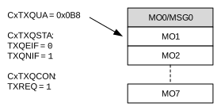
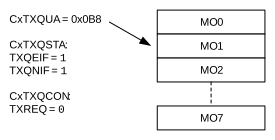
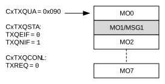
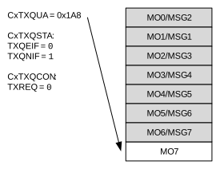
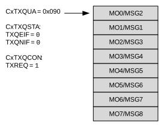

C1TXQCON is used to control the TXQ. C1TXQSTA contains the status flags and the TXQ index (TXQCIx). C1TXQUA contains the user address of the next transmit message object to be loaded.
The TXQCI[4:0] bits are used by the CAN FD Protocol module to calculate the next message to transmit. TXQCIx bits are not incremented linearly. They are recalculated every time a message gets transmitted or TXREQ gets set.
Figure 38-32 through Figure 38-37 illustrate how the status flags and user address are updated. There is no need for the user application to use TXQCIx; therefore, it is not shown in the figures.
Figure 38-32 shows the status of the TXQ after Reset. Message objects, MO0 to MO7, are empty. All status flags are set. The user address points to MO0.
Figure 38-33 illustrates the status of the TXQ after the first message (MSG0) is loaded. MO0 now contains MSG0. The user application sets the UINC bit, which causes the FIFO head to advance. The user address now points to MO1. TXQEIF is cleared, since the queue is not empty anymore. The user application now sets TXREQ to request the transmission of MSG0.

Figure 38-34 illustrates the status of the TXQ after MSG0 is transmitted. The TXQ is empty again. TXQEIF is set and TXREQ is cleared. The user address still points to MO1 because UINC is not set.

Figure 38-35 illustrates the status of the TXQ after MSG1 is loaded and UINC is set. The user address now points to the next free message object: MO0.

Figure 38-36 illustrates the status of the TXQ after six more messages are loaded: MSG2-MSG7. The user address now points to the last free message object: MO7.

Figure 38-37 illustrates the status of the TXQ after MSG8 is loaded and UINC is set. The TXQ is now full, all flags are cleared. The user address now points to MO0. The user application now sets TXREQ. The messages will be transmitted based on the priority of their IDs.
